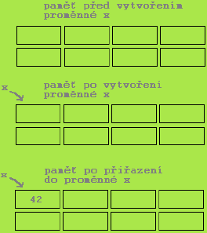

Proměnné Javy
- Proměnná je pojmenované místo v paměti
- Slouží k uchování hodnoty za běhu programu
- Každá proměnná má jméno a datový typ
- Pomocí jména se na proměnnou odkazujeme
- Datový typ udává, jaké hodnoty můžeme do proměnné ukládat (př. reálná čísla, řetězce, …)

Zápis
- Konvence a syntaxe zápisu
- Název začíná vždy malým písmenem nebo podtržítkem
- Název nesmí začínat číslovkou (ale později v názvu již může být použita)
- V případě, že je název tvořen více slovy, začíná každé slovo velkým písmenem
- Př.
pocet2,pocetPrvku
- Deklarace
- Proměnnou je nutno před prvním použitím deklarovat (definovat), tj. stanovit jméno a datový typ (do paměti se uloží automaticky)
int cislo;
char znak1, znak2;Přiřazení hodnoty
- Hodnotu uložíme do proměnné operátorem přiřazení → proměnná = výraz (hodnota);
cislo = 42;- První přiřazení do proměnné nazýváme inicializace
- Inicializaci proměnné je možné spojit s její deklarací
int cislo = 42;- Inicializace musí proběhnout před prvním čtením!
int i;
int j;
j = i + 2;//chyba při překladuDeklarace proměnných
- Doporučení
- Každá proměnná by měla být deklarována na samostatné řádce a okomentovaná
double celkemPlat; //celkový plat- Pozn.: Je povoleno deklarovat více proměnných na jeden řádek
int i, j;- Každá explicitně inicializovaná proměnná by měla být deklarována samostatně
int i;
int j = 1;- Mezi deklaracemi proměnných a dalšími příkazy je vhodné mít prázdnou řádku kvůli přehlednosti
Operátor přiřazení
- Pozor na následující terminologii
| Výraz | i * 2 + 3 |
|---|---|
| Přiřazení | j = i * 2 + 3 |
| Příkaz | j = i * 2 + 3; |
- To znamená:
- Výraz má vždy hodnotu (číselnou, znakovou nebo pravdivostní)
- Přiřazení je výraz a jeho hodnotou je hodnota přiřazená levé straně
- Přiřazení se stává příkazem, je-li ukončeno středníkem